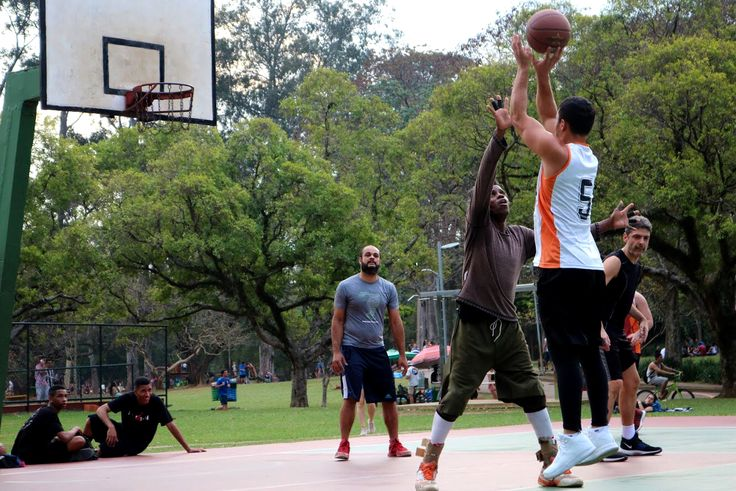

Quem sou eu
Sou estudante de Análise e Desenvolvimento de Sistemas na Fatec de Carapicuíba, e estudo nessa área desde o ensino médio. Já fiz diversos cursos, que vão desde HTML e engenharia de software até gestão de conflitos e de pessoas, que sinto ser importante para meu desenvolvimento profissional e individual.
O que me motiva a estudar tecnologia é o meu interesse pela área, que tenho desde o ensino médio, como foi dito no parágrafo anterior, e as oportunidades de mercado que a tecnologia oferece.
🛠️ Tecnologias que já vi
- HTML
- CSS
- JavaScript
- Java
🎮 Meus hobbies favoritos
- Basquete
- Jogar video game
- Futebol
Galeria dos meus hobbies


🎯 Objetivos profissionais
- Curto prazo (6 meses): Fortalecer meus conhecimentos em programação e desenvolvimento de software, aprimorando minhas habilidades técnicas por meio dos estudos e da criação de projetos próprios. Meu objetivo é começar a construir um portfólio e me preparar para conquistar uma oportunidade de estágio na área de tecnologia.
- Médio prazo (1-2 anos): Conquistar uma oportunidade de estágio ou minha primeira experiência profissional como desenvolvedor, aplicando na prática os conhecimentos adquiridos durante a faculdade. Quero desenvolver minhas habilidades, aprender com profissionais experientes e ganhar experiência em projetos reais.
- Longo prazo (3-5 anos): Concluir a graduação em Análise e Desenvolvimento de Sistemas e estar atuando profissionalmente na área de desenvolvimento de software. Pretendo me tornar um profissional qualificado, com experiência no desenvolvimento de soluções completas e capacidade de contribuir em projetos de diferentes níveis de complexidade, buscando também me especializar em uma área da tecnologia alinhada aos meus interesses e objetivos profissionais.
🔗 Links para me encontrar
⭐ TOP 5 sites que mais acesso
Meus conhecimentos
| Tecnologia | Nível | Tempo |
|---|---|---|
| Java | Básico | 6 meses |
| HTML | Intermediário | 3 anos |
| CSS | Intermediário | 3 anos |
| JavaScript | Básico | 2 anos |
Meus Projetos
Projeto 1: Athlo
Athlo é um aplicativo mobile desenvolvido com Flutter e Firebase com o objetivo de conectar pessoas através do esporte, permitindo a criação, descoberta e interação em comunidades esportivas baseadas em localização. O aplicativo integra recursos de rede social, geolocalização e comunicação em tempo real utilizando Firebase Cloud Firestore e Google Maps API.
Projeto 2: SistemaProjetos
Aplicação acadêmica para cadastro, organização e acompanhamento de projetos. O sistema possui duas interfaces — Java Swing (desktop) e Web (navegador) — que utilizam a mesma API HTTP em Java e compartilham os arquivos CSV de dados. O acesso é protegido por cadastro e login. Após autenticar, o usuário encontra cinco áreas principais: Dashboard, Projetos, Categorias, Relatórios e Configurações.
📅 Minha rotina de estudos
| Dia | Atividade | Duração |
|---|---|---|
| Segunda | HTML | 1h |
| Terça | CSS | 1h |
| Quarta | JavaScript | 1h |
| Quinta | Java | 1h |
| Sexta | Java | 1h |